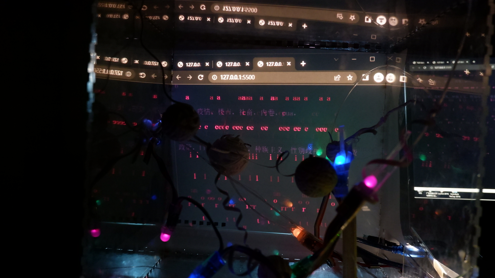

Vimeo Video
Video from this Light of Darkness
Images

I combined the psychological antagonism with the computer world. One of the internal structures is a neuronal structure. With this device I want to explore where the boundaries of opposition are and where the antagonistic effect is bound to occur in opposition. What is the balance of all this. For the model I used rhino modelling and 3d printed the neuron structure, but as some of the structures were not easy to type, I used fiber optics and white paper hand work.
I used the sound sensor as an input when the audience wanted to voice their opposition. The light strip will brighten to represent the increase in attention. The louder the audience is, the brighter the light band is and the attention increases accordingly. And the rear side chooses to combine the p5js and the sound sensor using projection. When the person's opposition reaches a certain level the word opposite to the opposition word will appear in the rear. For example, if the opposition word itself is war, the word peace will appear. When the user speaks louder the colored light in front of them becomes brighter, preventing the user from seeing the projected words. If people are keen to see the word 'peace', they need to speak louder against the war, and when faced with the phenomenon of opposition, do they give up their opportunity to speak out and seek other ways, or do they continue to oppose and break through the antagonism. In this way, the power of opposition and its countervailing force are explored